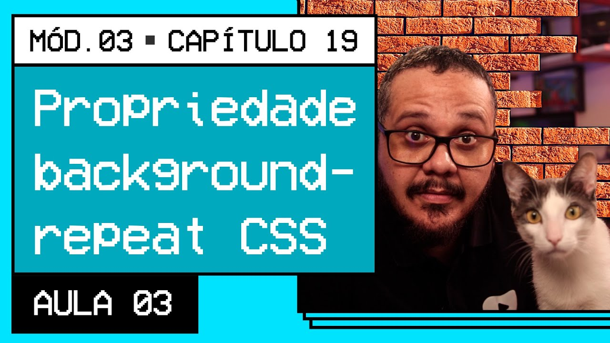

<!DOCTYPE html>
<html lang="pt-br">
<head>
    <meta charset="UTF-8">
    <meta name="viewport" content="width=device-width, initial-scale=1.0">
    <title>Personalização dos fundos</title>
    <link rel="shortcut icon" href="favicon.ico" type="image/x-icon">
 
 <style>
        body {
            background-image: url('https://gustavoguanabara.github.io/html-css/imagens/mascote.png');
            background-size: 100px 100px; 
            background-repeat: no-repeat;
            background-repeat: repeat-x;        
        }
    </style>
</head>
<body>

</body>
<footer>
    <!--<a href="https://youtu.be/_5KoMUMCTG0" target="_blank" rel="external"></a>-->
</footer>
</html>